Abstract
Diffusion models have consistently driven progress in text-to-image generation. However, it is challenging to attribute recent progress to specific modeling and data choices: state-of-the-art open-weight models provide limited ablations, and do not disclose their training data and full training details. The research community needs fully open (weights, data, and code) models as a foundation for further research; yet existing fully open models still fall significantly short of leading models in performance. In this project, we conduct a systematic investigation of the modeling and data design choices in text-to-image diffusion training and inference with 300+ controlled experiments totaling 700K+ TPU v6e hours. Our experiments highlight several empirical findings (e.g., equal weighting is a strong default for mixing curated datasets) and simple design decisions (e.g., larger text encoder adapters improve performance with minimal added parameters) for training strong models. Guided by these insights, we train i1, a 3B-parameter text-to-image diffusion model using only publicly available datasets. i1 is competitive with leading models on five representative benchmarks (GenEval, DPG, PRISM, CVTG-2K, and LongText), and outperforms the best existing fully open model by 29.5 absolute percentage points on average. We provide the i1 checkpoints, training and inference code, and the data processing pipeline. Together, our findings and the i1 recipe establish a practical foundation for future open research in text-to-image diffusion models.
Curated showcase of i1 in general image generation.
Curated showcase of i1 in text-rendering.
Motivation
Recent text-to-image models are strong, but their progress is hard to attribute. Leading open-weight systems release checkpoints without the training data and full recipe, and most technical reports bundle architecture, training, and data decisions into a single model with limited ablation.
We use controlled experiments to carefully study and understand the design space, then combine the designs that work into i1. The result is a fully open model that uses public datasets, simple components, and a recipe that can be studied and built upon.

High-level illustration of our final i1 model. Rather than introducing major new network modules, i1 combines carefully selected modeling and data design choices into a simple and strong text-to-image model.
Controlled Experiment Setup
All controlled experiments start from the same 256-resolution pre-training baseline and independently vary one design choice at a time (i.e., modifications are not accumulated across experiments).
Model: the baseline uses an XL/2-sized, LightningDiT-style cross-attention backbone with QK-norm, long skip connections, T5Gemma-2B as the text encoder, and FLUX.2 VAE.
Data: we combine 12 curated, publicly available datasets and generate long synthetic captions with Qwen3-VL-30B-A3B.
Training and inference: each model is trained for 500K iterations with batch size 512 and learning rate 1e-4, then sampled with a 250-step Euler integrator and CFG scale 12.
Evaluation: we evaluate with DPG-Bench, PRISM-Bench, and LongText-Bench to cover general prompt following, aesthetics, and text rendering.
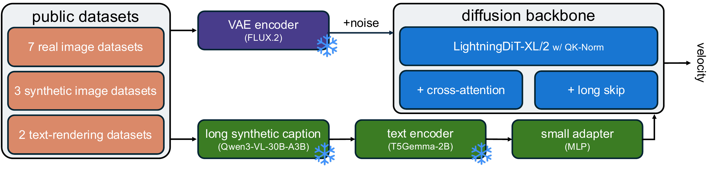
High-level illustration of our baseline for controlled experiments. We build a standard cross-attention architecture on top of LightningDiT and add QK-norm for training stability. We also include long skip connections, an underused design choice that we revisit and find helpful for performance.
| baseline variant | DPG ↑ | PRISM ↑ | LongText ↑ |
|---|---|---|---|
| cross-attention | 84.66 | 56.4 | 0.211 |
| single-stream | 85.89 | 55.6 | 0.293 |
| dual-stream | 86.82 | 58.3 | 0.439 |
Benchmark performance of baselines. The cross-attention variant is the default controlled-experiment baseline, while selected findings are validated across single-stream and dual-stream variants.
Model Designs
Text and Noise Conditioning
We compare CLIP-style encoders, encoder-decoder models, and decoder-only LLMs/VLMs as text encoders for text-to-image training. Although decoder-only LLMs/VLMs are now widely used in recent text-to-image systems, encoder-decoder T5Gemma models achieve the strongest overall results in our comparison.

Text encoders' performance across benchmarks. Under our modeling setup, the encoder-decoder T5Gemma models outperform representative decoder-only LLM/VLMs and CLIP-style models.
Both encoder-decoder models and decoder-only LLMs/VLMs can be competitive text encoders for text-to-image diffusion models.
Design: We use T5Gemma-2B, an encoder-decoder model, as the text encoder in i1 since it is one of the strongest models in our comparison.
Combining multiple text encoders helps, but further ablations show the gain can largely be reproduced by increasing adapter capacity for a single encoder. This is simpler and cheaper than concatenating features from multiple encoders, which increases text sequence length.
| text encoder | DPG ↑ | PRISM ↑ | LongText ↑ |
|---|---|---|---|
| T5Gemma-2B | 84.66 | 56.4 | 0.211 |
| repeat w/1 MLP | 84.93 | 55.8 | 0.225 |
| repeat w/2 MLP | 85.09 | 56.5 | 0.309 |
Concatenating two copies of T5Gemma-2B feature sequences and using two separate MLP adapters (equivalent to combining two T5Gemma-2B text encoders) yields a similar improvement as combining different text encoders, whereas using a shared MLP adapter does not. This suggests the improvement may come from additional adapter parameters, not separate text encoders.
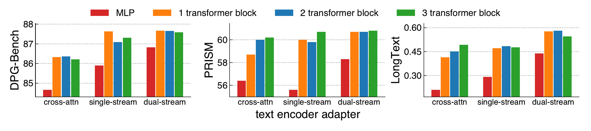
Using larger adapters for the text encoder consistently improves performance across backbone architectures. Beyond 2 transformer blocks, using larger adapters brings marginal further gains.
Beyond studying multiple text encoders and larger adapters, we also ablate AdaLN conditioning on pooled text embeddings, timestep embeddings, or both. Although AdaLN contributes many parameters, it brings only marginal benefit.
| MLP adapter (default) | transformer adapter (1x block) | ||||||||
|---|---|---|---|---|---|---|---|---|---|
| #params | DPG | PRISM | LongText | #params | DPG | PRISM | LongText | ||
| cross-attn | |||||||||
| default | 0.89B | 84.66 | 56.4 | 0.211 | 0.91B | 86.33 | 58.7 | 0.414 | |
| +2 encoders | 0.90B | 85.37 ↑ 0.71 | 58.8 ↑ 2.4 | 0.272 ↑ 0.061 | 0.94B | 86.47 ↑ 0.14 | 59.5 ↑ 0.8 | 0.491 ↑ 0.077 | |
| no pooled emb | 0.89B | 85.98 ↑ 1.32 | 57.5 ↑ 1.1 | 0.391 ↑ 0.180 | 0.91B | 86.37 ↑ 0.04 | 59.4 ↑ 0.7 | 0.446 ↑ 0.032 | |
| no timestep | 0.89B | 82.58 ↓ 2.08 | 54.7 ↓ 1.7 | 0.185 ↓ 0.026 | 0.91B | 84.71 ↓ 1.62 | 58.9 ↑ 0.2 | 0.418 ↑ 0.004 | |
| no AdaLN | 0.66B | 84.99 ↑ 0.33 | 57.4 ↑ 1.0 | 0.351 ↑ 0.140 | 0.67B | 85.13 ↓ 1.20 | 59.7 ↑ 1.0 | 0.413 ↓ 0.001 | |
| single-stream | |||||||||
| default | 0.82B | 85.89 | 55.6 | 0.293 | 0.83B | 87.64 | 60.0 | 0.472 | |
| +2 encoders | 0.83B | 84.89 ↓ 1.00 | 56.3 ↑ 0.7 | 0.439 ↑ 0.146 | 0.87B | 87.29 ↓ 0.35 | 59.0 ↓ 1.0 | 0.428 ↓ 0.044 | |
| no AdaLN | 0.57B | 87.38 ↑ 1.49 | 59.0 ↑ 3.4 | 0.390 ↑ 0.097 | 0.58B | 87.39 ↓ 0.25 | 59.5 ↓ 0.5 | 0.410 ↓ 0.062 | |
| dual-stream | |||||||||
| default | 1.24B | 86.82 | 58.3 | 0.439 | 1.25B | 87.67 | 60.7 | 0.576 | |
| +2 encoders | 1.25B | 87.34 ↑ 0.52 | 59.6 ↑ 1.3 | 0.514 ↑ 0.075 | 1.29B | 87.76 ↑ 0.09 | 60.8 ↑ 0.1 | 0.588 ↑ 0.012 | |
| no AdaLN | 1.01B | 87.82 ↑ 1.00 | 60.3 ↑ 2.0 | 0.508 ↑ 0.069 | 1.02B | 87.38 ↓ 0.29 | 60.7 0.0 | 0.554 ↓ 0.022 | |
Impact of text and noise conditioning when using an MLP vs transformer adapter. A larger transformer adapter improves performance with minimal added parameters, multiple encoders provide much smaller benefit with the larger adapter, and removing AdaLN conditioning marginally degrades performance.
The gains from using multiple text encoders can be similarly captured by increasing the adapter capacity for a single text encoder. Compared to using multiple encoders, increasing adapter capacity has lower memory and compute cost because it does not increase the text sequence length.
Design: We use a single, strong text encoder with an expressive text encoder adapter in i1.
Despite the large number of parameters introduced by AdaLN, conditioning on pooled text embeddings, timestep embeddings, or both through AdaLN provides only marginal benefit.
Design: We do not use AdaLN in i1.
Backbone Architecture
For the backbone, we revisit long skip connections and compare cross-attention, single-stream, and dual-stream families across model sizes. The strongest recipe uses a dual-stream MMDiT backbone with long skip connections.

Long skip connections can improve the performance-parameter trade-off for dual-stream models.
Long skip connections can improve the performance-parameter trade-off.
Design: We use long skip connections in i1.
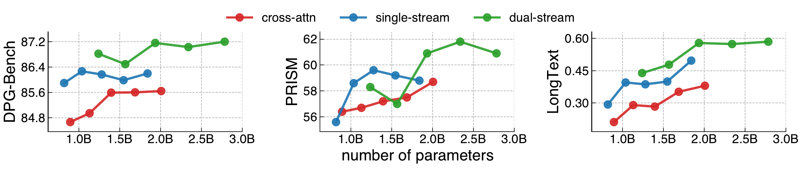
Backbone family. We compare cross-attention, single-stream, and dual-stream backbones across model sizes and find that the dual-stream backbone achieves the best overall performance.
The dual-stream backbone has the best trade-off between performance and parameter count among the cross-attention, single-stream, and dual-stream backbone families.
Design: We use the dual-stream backbone in i1.
Data Designs
Synthetic Captions and Prompt Rewrite
We compare VLMs as synthetic captioners based on the downstream text-to-image performance.

The choice of synthetic captioner is important for downstream text-to-image performance. Due to resource constraints, we generate captions and train only on ImageNet-22K images rather than the full image dataset.
The choice of VLM used to synthesize captions for training images has a substantial impact on downstream text-to-image performance.
Design: We use Qwen3-VL-30B-A3B to generate synthetic captions for training i1, since captions from this model lead to strong downstream performance.
We vary how much long vs. short caption data is used during training and evaluate trained models on short GenEval prompts. Long captions lead to stronger models, but these models underperform on short prompts. This issue can be mitigated by repeating or rewriting prompts.
| % of long captions in training captions |
original prompts (short) |
repeated prompts | rewritten prompts (long) |
||
|---|---|---|---|---|---|
| 4× | 12× | 20× | |||
| 0% | 0.47 | 0.55 | 0.34 | 0.24 | 0.60 |
| 20% | 0.47 | 0.54 | 0.53 | 0.50 | 0.67 |
| 40% | 0.35 | 0.59 | 0.55 | 0.54 | 0.70 |
| 60% | 0.37 | 0.60 | 0.57 | 0.54 | 0.73 |
| 80% | 0.26 | 0.57 | 0.54 | 0.47 | 0.73 |
| 100% | 0.17 | 0.48 | 0.49 | 0.46 | 0.73 |
Training captions and inference prompts should have aligned lengths (each number is a GenEval score). Training only on long captions and using LLM-based prompt rewriting to increase inference prompt length leads to the strongest performance. Due to resource constraints, we generate captions and train only on ImageNet-22K images rather than the full image dataset.
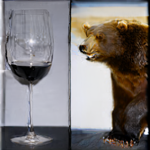
test: original (short) train: long,
test: original (short) train: long,
test: repeated 12× (long) train: long,
test: rewritten (long)
Examples from models trained on ImageNet-22K caption variants and tested on GenEval prompt variants. Training on long captions leads to weaker performance on short prompts, but prompt repetition and rewrite mitigate this.
Training on short captions weakens overall performance, whereas training on long captions yields stronger models but performs poorly on short test prompts. Prompt rewrite addresses this weakness on short prompts by expanding them, making training on long captions preferable overall.
Design: We only use long captions to train i1, and apply inference-time prompt rewriting.
Dataset Mixing
Single-dataset experiments show that ImageNet-22K and YFCC are strong real-image datasets, iNaturalist is the weakest, and text rendering depends heavily on specialized text-rich datasets (e.g., TextAtlas). Subsampling each dataset to 1M images leaves the broad trends intact.
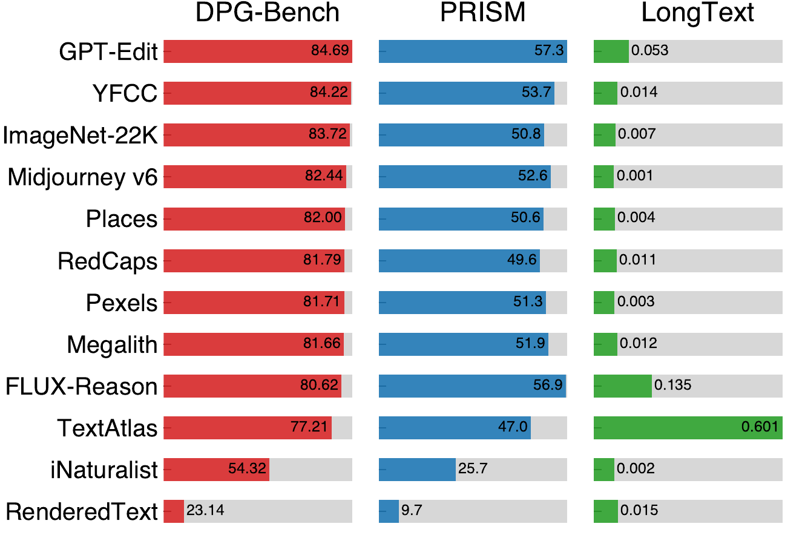
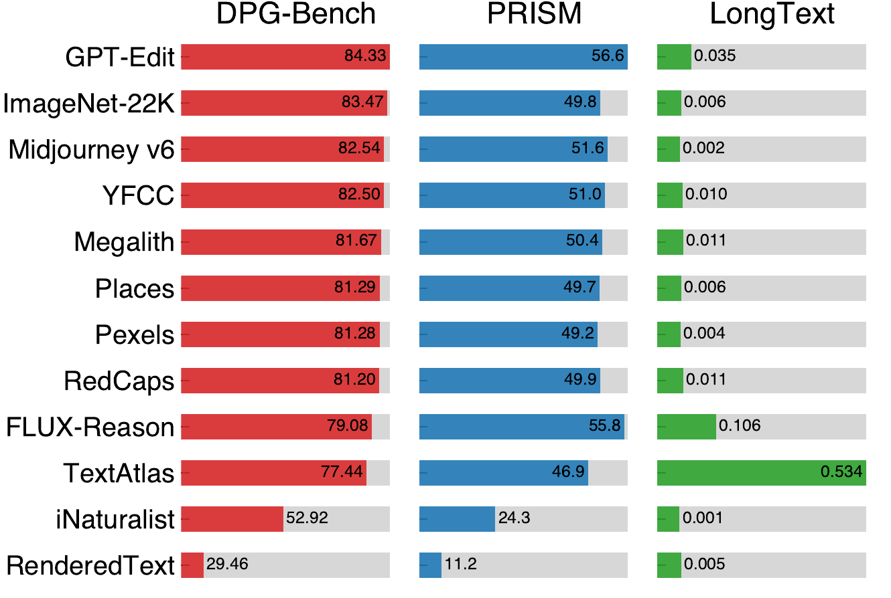
Benchmark performance for single-dataset training. Among real datasets, ImageNet-22K and YFCC perform best, while iNaturalist performs worst. Text rendering capability relies strongly on specialized text-rich image datasets. Across most datasets, performance changes only marginally after subsampling each dataset to 1M.
We train 3 models using only real, synthetic, or text-rendering data subsets and find that all are important for performance.
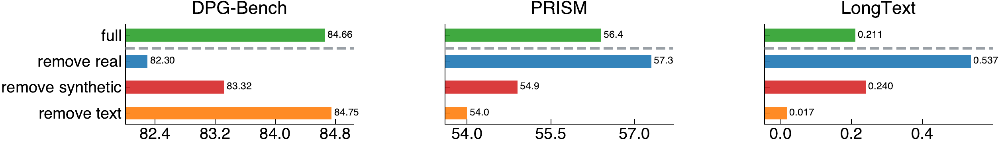
Real, synthetic, and text-rendering images are all important for model performance. Removing any of them leads to inferior performance on at least one benchmark.
Because naive mixing makes large datasets dominate the sampling distribution, we cap dataset weights at several thresholds. More even weights work better, with exact equal weighting as a strong default; after equal weighting, removing iNaturalist helps, while further removing other weak real image datasets does not.
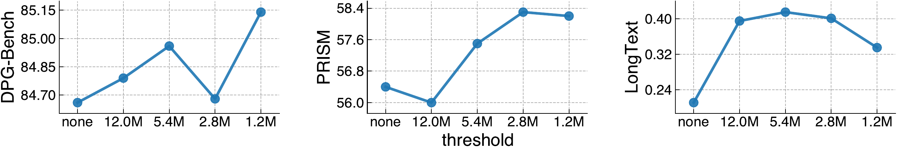
Threshold-based weighting. By default, the sampling weight of a dataset is its number of images. We explore dataset-level balancing by capping the sampling weights for all datasets at four hand-picked thresholds. We find that lower thresholds (i.e., more even weights) generally lead to stronger performance.
| datasets | DPG ↑ | PRISM ↑ | LongText ↑ |
|---|---|---|---|
| full | 85.14 | 58.2 | 0.335 |
| remove iNaturalist | 85.56 | 58.7 | 0.384 |
| remove iNaturalist + Megalith | 85.13 | 59.0 | 0.438 |
| remove iNaturalist + Megalith + Places | 85.18 | 57.9 | 0.453 |
Removing the weakest real-image datasets one by one under equal weighting, based on single-dataset results. Removing iNaturalist improves all benchmark scores, while further removing Megalith and Places does not.
Training the model on equal numbers of images from each dataset, counting repetitions (i.e., equal weighting across datasets), is a simple and effective dataset mixing strategy.
Design: We equally weight all selected datasets at each training stage of i1.
With a diverse mix of datasets, repeating training data incurs only marginal performance degradation. Even when every dataset is reduced to 0.4M unique images, performance drops only slightly compared with the full mixture.
| subset size for each dataset | unique #imgs seen | DPG ↑ | PRISM ↑ | LongText ↑ |
|---|---|---|---|---|
| full | 88.1M | 85.56 | 58.7 | 0.384 |
| 1.0M | 11.0M | 85.34 | 57.7 | 0.384 |
| 0.4M | 4.4M | 84.67 | 57.7 | 0.382 |
| 0.1M | 1.1M | 84.71 | 57.4 | 0.349 |
Subsampling mixtures of datasets. Starting from the final data recipe, subsampling each dataset to 0.4M images gives 4.4M unique images seen instead of 88.1M and only slightly degrades model performance.
With a diverse mix of image datasets, using fewer unique images and more training epochs causes marginal performance degradation in text-to-image diffusion training.
Design: We subsample high-resolution images to reduce storage requirements for i1 training.
i1 Training and Evaluation
The final model combines the controlled-experiment findings: a dual-stream MMDiT backbone, long skip connections, a single T5Gemma-2B text encoder with a 2-block transformer adapter, no AdaLN, both sinusoidal and RoPE positional embeddings, shared sandwich normalizations, long captions, equal dataset weighting, and prompt rewriting at inference.
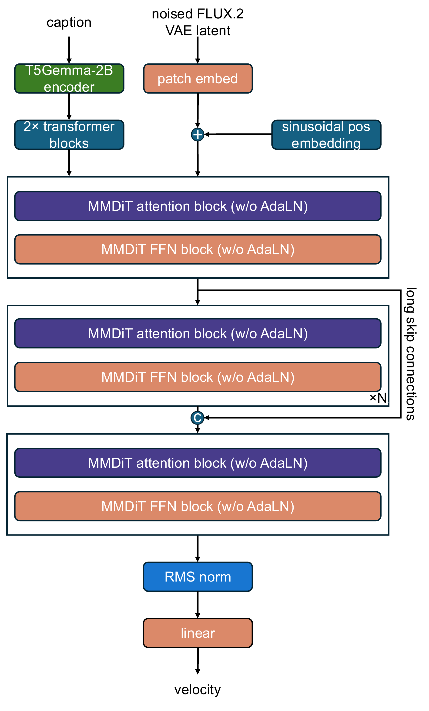
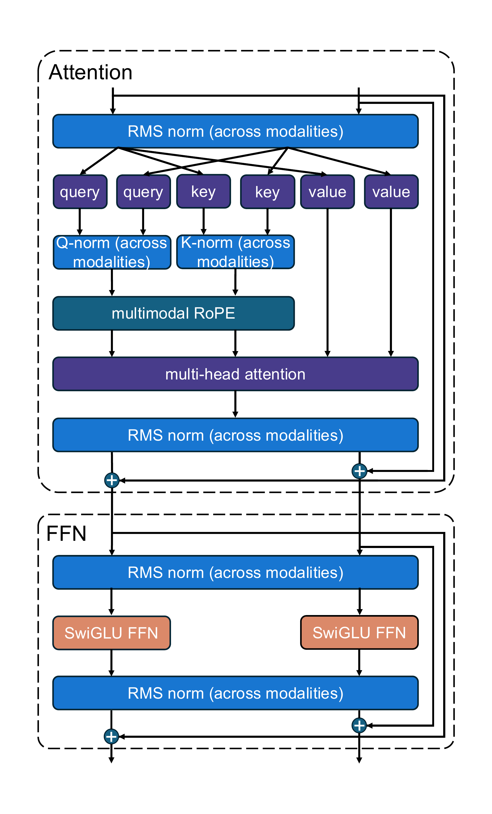
The architecture of our final i1 model. Building on an MMDiT backbone, we use a large text encoder adapter consisting of 2 transformer blocks, remove noise conditioning (i.e., AdaLN), add long skip connections, combine both sinusoidal and RoPE positional embeddings, and share sandwich normalizations across text and image streams.
We progressively train on 256-, 512-, and 1024-resolution images. The 512- and 1024-resolution datasets are built from the 256-resolution training data by filtering for images whose shorter edge meets the target resolution.
| training stage | #images | training steps | batch size | training timestep shift value | TPU v5p-128 hours |
|---|---|---|---|---|---|
| 256-resolution | 162.9M | 2.0M | 512 | N/A | 383.0 |
| 512-resolution | 9.7M | 0.5M | 512 | N/A | 174.4 |
| 1024-resolution | 4.3M | 0.3M | 128 | 3.33 | 150.9 |
Training configurations and compute resources for the final i1 model at each training stage.
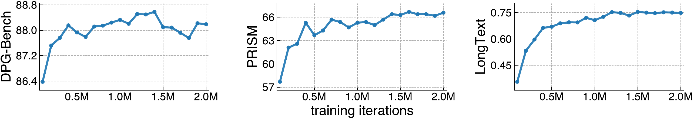
Benchmark performance of i1 during 256-resolution pre-training. Performance stabilizes around 500K iterations and largely converges by 2M iterations.
Example generated images at different iterations of 256-resolution training. Overall image quality and text-rendering capability improve throughout the training run, mirroring the benchmark score improvements.
Text rendering performance improves substantially with 512-resolution training, even when text-rendering datasets are not used.

Benchmark performance of i1 at 512-resolution with different training sets. PRISM and LongText improve substantially with 512-resolution training, even when text rendering data is not used.
Text rendering improves substantially after 512-resolution training, as demonstrated by example images generated from our 256-resolution and 512-resolution checkpoints using the same input prompts from LongText-Bench.
Training a model to achieve strong high-resolution generation does not require high-resolution training data to match the full breadth of the low-resolution pre-training data.
Design: We do not further expand the resolution-filtered high-resolution datasets for i1 training.
At inference, i1 uses CFG scale 12, Rescale CFG with strength 1, and a single prompt-rewriting meta-prompt for all input prompts. We evaluate the 1024-resolution checkpoint on GenEval, DPG-Bench, PRISM, CVTG-2K, and LongText-Bench.
| model | #params | GenEval | DPG-Bench | PRISM | CVTG-2K | LongText-Bench |
|---|---|---|---|---|---|---|
| API call only | ||||||
| GPT Image 1 [High] | - | 0.84* | 85.15* | - | 0.8569* | 0.956* |
| Seedream 3.0 | - | 0.84* | 88.27* | - | 0.5924* | 0.896* |
| Open weights only | ||||||
| FLUX.1 [Dev] | 12B | 0.66* | 83.84* | 65.1 | 0.4965* | 0.607* |
| SD3 Medium | 2B | 0.62* | 84.08* | 61.9 | 0.4037 | 0.322 |
| Janus-Pro-7B | 7B | 0.80* | 84.19* | 60.0 | 0.0667 | 0.019* |
| BAGEL | 14B | 0.88* | 85.44 | 61.8 | 0.3642 | 0.373* |
| HiDream-I1-Full | 17B | 0.83* | 85.89* | 66.1 | 0.7738 | 0.543* |
| Lumina-Image 2.0 | 3B | 0.73* | 87.20* | 63.5 | 0.1577 | 0.088 |
| Z-Image | 6B | 0.84* | 88.14* | 74.2 | 0.8671* | 0.935* |
| Qwen-Image | 20B | 0.87* | 88.32* | 73.9 | 0.8288* | 0.943* |
| Open weights + data + training code | ||||||
| BLIP3o-4B | 4B | 0.77 | 79.73 | 53.2 | 0.0353 | 0.023 |
| PixNerd | 1B | 0.73* | 80.9* | 53.3 | 0.0006 | 0.020 |
| DeCo | 1B | 0.86* | 81.4* | 53.1 | 0.0014 | 0.003 |
| BLIP3o-N-S | 3B | 0.87 | 81.98 | 56.8 | 0.2493 | 0.110 |
| BLIP3o-N-G-G | 3B | 0.90 | 81.93 | 57.5 | 0.2442 | 0.114 |
| BLIP3o-N-G-T | 3B | 0.86 | 79.77 | 56.8 | 0.3330 | 0.153 |
| i1 (Ours) | 3B | 0.84 | 86.73 | 70.1 | 0.8531 | 0.922 |
Performance on representative text-to-image benchmarks. i1 achieves state-of-the-art performance among fully open models on all five benchmarks except GenEval and outperforms several leading weight-only models.
Takeaway. Strong text-to-image models do not have to rely on opaque recipes, inaccessible data, or highly specialized new components. Through controlled experiments, i1 shows that a simple, fully open recipe built from public datasets and carefully validated design choices can be competitive with leading open-weight models. We hope the released model, code, data recipe, and ablations provide both a strong baseline and a useful reference point for cumulative, reproducible research.
This project page only summarizes the main findings and design choices. The paper includes many additional experiments, analyses, and discussions; readers who want the full context are encouraged to read the complete paper.
Citation
@article{zeng2026i1,
title={i1: A Simple and Fully Open Recipe for Strong Text-to-Image Models},
author={Zeng, Boya and Luo, Tianze and Pu, Shu and Shen, Jucheng and Lu, Taiming and Sarch, Gabriel and Liu, Zhuang},
journal={arXiv preprint arXiv:2606.11289},
year={2026}
}